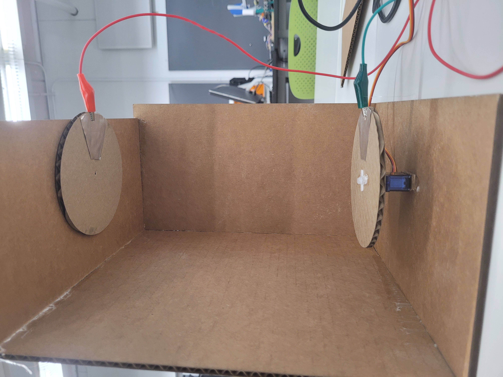

<br>
## 6: Electronic Input Devices
### phototransistor
For the first part of this assignment I programmed a phototransistor.
# Here is what it looks like:
<img src="photo curcuit.jpg" width="505" height="370" >
# A graph of my findings with it:
I found that the numbers it recieves vary depending on how much light the phototransistor detects. With this being said I recorded how much light it detected with varying amounts of light. I found that when covered with your hands it detects an average of 97.5 of light, but when I increased the amount of light on it it reached to a maximum of 392. I found that I could control this number by adding and subtracting the amount of light on the phototransistor.
<img src="phototransistor graph.PNG" width="505" height="270" >
______________________________________________________________________________________
### Capacitive Sensor
I made a rotating capacitive sensor because I wanted to see how the data would change as one side rotates. I included a Servo motor to make one side move 180 degrees and back.
First I started by making two circles in Fusion360. their diameter is 110 mm and I hand cut triangles off the edges so that the alligator clips could attach to the metal. After that I hot glues the metal to the circles and ho glued them opposite of each other on a box. I connected the Servo motor to one side and programmed it to spin 180 degrees. I measured the capacity while it spun.
# Here's what the curcuit looks like:
<img src="6 look.jpg" width="405" height="330" >
# Here is it in motion:
<video width="620" height="240" controls>
<source src="capacity vid.mp4" type="video/mp4">
</video>
# A graph of my findings with it:
# Finished product:

# Here is the Arduino code for the phototransister:
<pre style="border:2px solid #BCBEC0; padding 10px; font: 14px Moneco; width:70%; background: #f7f7f9;border-radius: 25px;"><code>
/*
AnalogReadSerial
Reads an analog input on pin 0, prints the result to the Serial Monitor.
Graphical representation is available using Serial Plotter (Tools > Serial Plotter menu).
Attach the center pin of a potentiometer to pin A0, and the outside pins to +5V and ground.
This example code is in the public domain.
https://www.arduino.cc/en/Tutorial/BuiltInExamples/AnalogReadSerial
*/
// the setup routine runs once when you press reset:
void setup() {
// initialize serial communication at 9600 bits per second:
Serial.begin(9600);
}
// the loop routine runs over and over again forever:
void loop() {
// read the input on analog pin 0:
int sensorValue = analogRead(A0);
// print out the value you read:
Serial.println(sensorValue);
delay(1); // delay in between reads for stability
}
}</code>
# Here is the Arduino code for the capacitive sensor:
<pre style="border:2px solid #BCBEC0; padding 10px; font: 14px Moneco; width:70%; background: #f7f7f9;border-radius: 25px;"><code>
#include <Servo.h>
Servo myservo; // create servo object to control a servo
int pos = 0; // variable to store the servo position
long result; //variable for the result of the tx_rx measurement.
int analog_pin = A3;
int tx_pin = 4;
void setup() {
pinMode(tx_pin, OUTPUT); //Pin 4 provides the voltage step
Serial.begin(9600);
myservo.attach(9); // attaches the servo on pin 9 to the servo object
}
void loop() {
result = tx_rx();
Serial.println(result);
for (pos = 0; pos <= 180; pos += 1) { // goes from 0 degrees to 180 degrees
// in steps of 1 degree
myservo.write(pos); // tell servo to go to position in variable 'pos'
delay(30); // waits 15ms for the servo to reach the position
}
myservo.write(0); // send the servo back to 0
delay(1000); // give it enough time to make it there
}
long tx_rx(){ // Function to execute rx_tx algorithm and return a value
// that depends on coupling of two electrodes.
// Value returned is a long integer.
int read_high;
int read_low;
int diff;
long int sum;
int N_samples = 100; // Number of samples to take. Larger number slows it down, but reduces scatter.
sum = 0;
for (int i = 0; i < N_samples; i++){
digitalWrite(tx_pin,HIGH); // Step the voltage high on conductor 1.
read_high = analogRead(analog_pin); // Measure response of conductor 2.
delayMicroseconds(100); // Delay to reach steady state.
digitalWrite(tx_pin,LOW); // Step the voltage to zero on conductor 1.
read_low = analogRead(analog_pin); // Measure response of conductor 2.
diff = read_high - read_low; // desired answer is the difference between high and low.
sum += diff; // Sums up N_samples of these measurements.
}
return sum;
}
}</code>